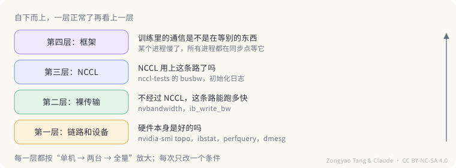

线索是：先弄清量通信用什么单位 → 再算出“正常应该是多少”，才有参照 → 然后学会读 NCCL 自己打印的日志，它会告诉你它选了什么 → 查问题时按层自下而上排除 → 最后记住几种最常见的故障长什么样。这一单元的每一条都能在 InfiniBand 环境里直接用上。
第 6 部分 · 集合通信与 NCCL6.3 通信的测量与排查
这一单元回答怎么知道通信慢不慢？慢了从哪里查起？
承接 6.2 和 0.2：同样是“先量、再拆、找最大的一段”，这次用在通信上。
- 两种带宽：algbw 是你感受到的，busbw 用来和硬件比
- 先算出“应该是多少”，再看测出来差多少
- NCCL 的初始化日志回答三个问题：用了哪张网、每对卡走哪条路、建了几个通道
- 分层排除，自下而上：链路 → 裸 RDMA → NCCL → 框架
- 几种典型故障，各有各的指纹
讲解
1两种带宽：algbw 是你感受到的，busbw 用来和硬件比
nccl-tests 对每次测试报告两个带宽。算法带宽（algbw）= 数据量 ÷ 时间，是这次操作对使用者而言的速度。总线带宽（busbw）= 算法带宽 × 一个修正系数，它估算的是每条链路上实际跑出的速度，可以直接和 NVLink 或网卡的带宽比较，而且不随卡数变化。
算法带宽。 最直观的定义：对一块大小为 S 的数据做一次集合通信，用了时间 t，algbw = S ÷ t。
它的问题是会随卡数变化。6.1 算过：环形 all-reduce 里每张卡要发出 2(n−1)/n 份数据。卡越多，同样的 S 需要在链路上传的量越接近 2S，algbw 就越低，哪怕硬件完全没变。于是 2 卡和 8 卡的 algbw 不能直接比，也不能直接和链路的标称带宽比。
总线带宽。 把上面那个因素除掉：既然每张卡实际传了 2(n−1)/n × S 的数据，用了时间 t，那么链路上的实际速率就是
busbw = algbw × 2(n−1)/n
这个数反映的是硬件瓶颈（NVLink、PCIe 或网络）的速度，不管用几张卡测，理想情况下都应该接近那条链路的带宽。
各操作的修正系数（来自 nccl-tests 的文档）：
- all-reduce：2(n−1)/n
- reduce-scatter、all-gather：(n−1)/n，正好是 all-reduce 的一半（6.1 讲过，它们各是半个 all-reduce）
- broadcast、reduce：1（所有数据都要从根那一张卡进出，瓶颈就是它的一条链路）
怎么用。
- 问“这套硬件和配置正常吗”：看大消息时的 busbw，和链路带宽比。
- 问“我的训练每步同步梯度要多久”：用 algbw。比如梯度共 1 GB，8 卡时 busbw 测得 40 GB/s，则 algbw = 40 ÷ 1.75 ≈ 23 GB/s，一次同步约 44 毫秒。
- 比较不同规模（2 卡、8 卡、64 卡）的结果：比 busbw。它如果随规模增大而明显下降，说明规模带来了额外的问题（5.3 的撞车和拥塞）。
动手：跑一次 nccl-tests 并读懂输出
nccl-tests 是 NVIDIA 提供的一组小程序，每种集合通信一个。编译后在
build/目录下。单机多卡：
./build/all_reduce_perf -b 8 -e 8G -f 2 -g 8
-b 8 -e 8G：消息大小从 8 字节到 8 GB。-f 2：每次翻倍。-g 8：这个进程用 8 张卡。
多机： 用 MPI 在每台机器上启动进程，每个进程用若干张卡。比如两台机器、每台 8 张卡：
mpirun -np 16 -H node1:8,node2:8 ./build/all_reduce_perf -b 8 -e 8G -f 2 -g 1
输出的每一行是一个消息大小，主要的列：
size：消息大小（字节）。time：一次操作的平均耗时（微秒）。algbw、busbw：两种带宽（GB/s）。#wrong：结果校验出错的个数，必须是 0。
这几列会出现两组：out-of-place（输入输出是不同的缓冲区）和 in-place（同一个缓冲区）。
怎么读这张表。 从上往下看 busbw 和 time：
- 最上面几行（很小的消息）：busbw 很低，这是正常的。这时该看
time：它基本不随大小变化，就是这次操作的固定延迟。单机内通常是几十微秒；跨机会更高。 - 中间：busbw 随消息增大快速上升。有时会看到台阶，那是 NCCL 在切换协议或算法（6.2）。
- 最下面几行（几百 MB 以上）：busbw 应该稳定在一个平台上。这个平台值就是要和硬件对比的数。
几种不正常的形状：
- 平台值远低于预期：路没走对（下一节算预期，再下一节看日志）。
- 到了大消息 busbw 反而下降：可能是缓冲区、显存或拥塞的问题。
- 同样的命令多次运行结果差别很大：有别的作业在共享网络，或者有不稳定的链路。
加上
NCCL_DEBUG=INFO再跑一次，可以同时看到 NCCL 选了什么路。打个比方像评价一条环城快递线：algbw 是“一个包裹送到全城要多久”，卡越多自然越慢一点；busbw 是“每辆车在路上的实际车速”，它反映的是路的状况，和有几个站点无关。
所以判断硬件和配置有没有问题，看 busbw；估算训练里一次梯度同步要多久，用 algbw。两者不要混着比。
- 有了单位，还需要参照。一个孤零零的“busbw 12 GB/s”说明不了任何问题。
2先算出“应该是多少”，再看测出来差多少
测之前先估一个预期：机内看 NVLink（或 PCIe）的带宽，跨机看每张卡对应的网卡带宽；小消息看延迟，大消息看 busbw 的平台值。实测达到预期的七八成以上，一般就是正常的；只有几分之一，说明路走错了；只有百分之几，多半是退回了 TCP。
机内。 有 NVLink 的机器上，瓶颈是 NVLink。5.1 给过数字：H100 每张卡合计 900 GB/s，这是所有链路、两个方向加在一起。环形 all-reduce 里每张卡同时在一个方向上收、另一个方向上发，所以能指望的 busbw 是单方向的量级，也就是几百 GB/s。实际的平台值还受通道数、SM 的搬运能力限制，通常低于这个理论值。最可靠的参照是同型号机器上的已知结果：同一批机器，busbw 应该彼此接近。
没有 NVLink、GPU 之间走 PCIe 的机器，预期就是 PCIe 的量级：十几到几十 GB/s，而且受拓扑影响很大（5.1）。
跨机。 瓶颈是网卡。每张卡对应一块 400 Gb/s 的网卡时，单方向约 50 GB/s，这就是每张卡的 busbw 上限的量级；200 Gb/s 的网卡约 25 GB/s。两张卡共用一块网卡时再减半。
注意一个容易误判的地方：单机 8 卡测出几百 GB/s，两台机器 16 卡测出四十几 GB/s，下降了几倍，这是正常的。环上只要有一跳跨机，整个环的速度就由这最慢的一跳决定（0.1 的“瓶颈决定一切”）。
延迟。 看最小那几个消息的
time。机内是几十微秒的量级；跨机经 InfiniBand 会高一些，但仍是几十到一两百微秒。如果是毫秒级，说明走的是 TCP，或者有严重的问题。怎么判断差距。
- 达到预期的七八成以上：正常。剩下的差距来自协议开销、通道数等。
- 只有预期的一半左右：常见原因是少用了一半的资源，比如两块网卡只用上一块、链路降速了一档、没用上 GPUDirect RDMA。
- 只有预期的几分之一到十分之一：路走错了，比如机内没走 NVLink、跨机经主内存中转而且 NUMA 位置不对。
- 只有百分之几，而且小消息延迟是毫秒级：退回了 TCP socket。
规模扩大时。 2 台、4 台、8 台……分别测，busbw 的平台值应该大体持平。如果机器越多越低，问题在网络的拓扑和选路上（5.3），而不在单台机器。
这些预期都是量级上的估计。等你在自己的环境里测出第一组数，可以把它记进笔记，那才是最准的基线。
打个比方像体检：先要知道这个年龄的正常范围，化验单上的数字才有意义。
所以每换一套环境，第一件事是建立通信的基线：单机多卡一个数，两台机器一个数，记下来。以后训练变慢时，重测一遍就知道是不是通信的问题。
- 预期和实测对不上时，先别猜。NCCL 自己知道它选了什么，而且愿意告诉你。
3NCCL 的初始化日志回答三个问题：用了哪张网、每对卡走哪条路、建了几个通道
把环境变量 NCCL_DEBUG 设成 INFO，NCCL 会在初始化时打印它的每一个选择：找到了哪些网卡、用哪种网络传输；每个通道上每一对相邻的卡之间用的是哪种传输；一共建了多少通道。这是确认“路有没有走对”最直接的证据。
NCCL_DEBUG=INFO python train.py # 或者 nccl-tests NCCL_DEBUG=INFO NCCL_DEBUG_FILE=/tmp/nccl.%h.%p.log ... # 每个进程写一个文件
日志很长，但要找的只有三类。下面的例子是常见的形式，不同版本的措辞会有差别。
一、用了哪张网。 找
NET/开头的行：NCCL INFO NET/IB : Using [0]mlx5_0:1/IB [1]mlx5_1:1/IB ... ; OOB ib0:10.0.0.5<0> NCCL INFO Using network IB
- 第一行列出它找到并打算使用的 RDMA 设备。数一数是不是你期望的那几块；
/IB表示链路层是 InfiniBand，RoCE 的设备会标成/RoCE。 OOB后面是带外握手用的接口。Using network IB是结论。如果这里是Using network Socket，说明它没有用 RDMA，后面不用看了，先解决这个问题。
二、每对卡之间走哪条路。 找
Channel开头、带via的行：NCCL INFO Channel 00/0 : 0[0] -> 1[1] via P2P/CUMEM NCCL INFO Channel 00/0 : 7[7] -> 8[0] via NET/IB/0/GDRDMA
- 箭头两边是这一跳的两张卡（编号和所在机器上的卡号）。
via后面是传输方式。机内应该是P2P/…；出现SHM说明这一对没有走设备直传。- 跨机应该是
NET/IB/…，后面带GDRDMA才说明用上了 GPUDirect RDMA。只有NET/IB/0而没有它，就是经主内存中转。出现NET/Socket，就是 TCP。
三、建了多少通道、图建好没有。
NCCL INFO Connected all rings NCCL INFO Connected all trees NCCL INFO 16 coll channels, ... , 16 p2p channels, ...
初始化卡住时，看日志停在哪一步：停在握手阶段，多半是带外的接口选错了或者端口不通；停在建连接阶段，多半是 RDMA 这一层的问题。
还可以看得更细。
NCCL_DEBUG_SUBSYS可以选择打印哪些子系统的信息。排查拓扑和 CPU 绑定时，官方文档建议这样用：NCCL_DEBUG=INFO NCCL_DEBUG_SUBSYS=INIT,GRAPH,ENV ...
ENV会列出 NCCL 读到的所有环境变量。这一条很有用：很多“莫名其妙”的行为，是因为某个脚本或镜像里早就设了某个NCCL_变量，而你并不知道。任何
NCCL WARN开头的行都值得读，它们通常带着源文件名和行号，可以对照 6.2 的源码地图定位到是哪一层出的问题。打个比方像出发前导航软件显示的路线：走哪条高速、从哪个出口下。先看一眼路线对不对，比开到一半发现走错了再回头要省事得多。
所以遇到通信性能问题，第一步永远是带上 NCCL_DEBUG=INFO 重跑，把初始化那一段日志读一遍。很多问题读完就有了答案。
- 第一行列出它找到并打算使用的 RDMA 设备。数一数是不是你期望的那几块；
- 日志确认了路是对的，或者指出了哪里不对。接下来要定位原因，需要一个不会漏、不会乱的顺序。
4分层排除，自下而上：链路 → 裸 RDMA → NCCL → 框架
通信问题可能出在四层中的任何一层：物理链路和网卡、RDMA 传输、NCCL、训练框架。每一层都有不依赖上层的测试工具。从最下面开始，逐层确认“这一层单独测是正常的”，第一个不正常的层就是问题所在。

四层和每层要问的问题 第一层：链路和设备。 问的是“硬件本身是好的吗”。
- 机内：
nvidia-smi topo -m、nvidia-smi nvlink -s、PCIe 的协商速率（5.1）。 - 跨机：
ibstat看端口状态和速率，perfquery -x看错误计数（5.2）。 - 内核日志：
dmesg里有没有 Xid 或网卡的报错。
第二层：裸传输。 问的是“不经过 NCCL，这条路能跑多快”。
- 机内：
nvbandwidth测卡到卡的带宽。 - 跨机：
ib_write_bw和ib_write_lat测两台机器之间的 RDMA 带宽和延迟；加--use_cuda可以把显存也带上。
这一层达不到硬件的标称值，问题就在网络或驱动，不必往上看。
第三层：NCCL。 问的是“NCCL 有没有把下面的能力用出来”。
nccl-tests，配合NCCL_DEBUG=INFO。- 对照前两节：busbw 的平台值和预期比，日志里的路径和预期比。
NCCL 文档的原话是：网络工具测出来符合预期而 NCCL 不符合，才轮到检查 NCCL 的配置。
第四层：框架和训练本身。 问的是“通信本身没问题，为什么训练里还是慢”。常见的原因：
- 通信和计算在抢 GPU（通道占用 SM，6.2）。
- 通信没有和计算重叠起来（7.1 的分桶）。
- 某个进程因为数据加载或别的原因慢了，所有进程在同步点等它。这时通信“看起来”很慢，其实是在等。
另一个维度：规模。 每一层都按“单机 → 两台 → 全量”的顺序放大。单机正常、两台不正常，问题在跨机这一段；两台正常、规模上去才不正常，问题在网络的拓扑、选路和拥塞上（5.3）。
一条纪律。 每次只改一个条件，改完重测，记下结果（0.2 的基线）。通信问题的变量特别多，同时改两样，就再也说不清是哪一样起的作用了。
打个比方像家里上不了网：先看网线和光猫的灯，再试能不能连上路由器，再试能不能打开别的网站，最后才怀疑是这个软件的问题。
所以不要一上来就调 NCCL 的参数或改训练代码。下层有问题时，在上层做什么都没用，还会把现象搅得更乱。
承接 NCCL 的初始化日志回答三个问题：用了哪张网、每对卡走哪条路、建了几个通道先算出“应该是多少”，再看测出来差多少RDMA 假设网络几乎不丢包；InfiniBand 用“信用”做到这一点把一步的时间拆开：每一段各占多少后面会用到 几种典型故障，各有各的指纹- 机内：
- 分层排查是通用的办法，但比较费时。好在常见的问题就那么几种，认得它们可以走捷径。
5几种典型故障，各有各的指纹
实际遇到的通信问题，大多数属于有限的几种：退回了 TCP；选错了网卡或网络接口；没用上 GPUDirect RDMA；机内的直传被虚拟化设置堵住；某条链路降速或有误码；一个慢节点拖住全体。每一种在日志、带宽数字或计数器上都有可以辨认的特征。
一、退回了 TCP。
- 现象：跨机 busbw 只有预期的百分之几；小消息延迟是毫秒级；日志里是
Using network Socket或via NET/Socket。 - 常见原因：容器里没有把 RDMA 设备映射进来，或者缺少 verbs 的库；允许锁页的内存上限太小，注册内存或建 QP 失败（日志里会有
ibv_reg_mr failed或ibv_create_qp failed的警告，用ulimit -l检查，应为 unlimited）；有人设了NCCL_IB_DISABLE=1。
二、选错了网卡或接口。
- 现象：初始化卡住或超时；或者能跑，但 busbw 只有一半（只用上了部分网卡）；日志里列出的设备不是你期望的那几块。
- 常见原因：机器上有多张网，NCCL 选到了一个连不通其他节点的接口来握手；或者把前端的网卡也当成了传数据的网卡。
- 处理：用
NCCL_SOCKET_IFNAME指定握手用的接口，用NCCL_IB_HCA指定传数据的设备。这两个是多网卡机器上少数应该长期设置的变量。
三、没用上 GPUDirect RDMA。
- 现象：跨机 busbw 明显低于网卡带宽，CPU 占用偏高；日志里跨机的连接是
NET/IB但没有GDRDMA。 - 常见原因：
nvidia-peermem模块没加载；网卡和 GPU 不在同一个 PCIe 交换芯片下（5.1、5.2）。
四、机内直传被堵。
- 现象：单机多卡的 busbw 就远低于预期，或者干脆卡死；日志里机内的连接走的是
SHM，或者虽然是 P2P 但很慢。 - 常见原因：IOMMU 或 PCIe ACS 开着，设备间的直传被强制绕道 CPU（5.1 有检查方法）。
五、链路降速或有误码。
- 现象：某几个节点参与时就慢，换一批节点就正常；或者时好时坏。
- 验证：
ibstat的速率、perfquery的错误计数、分轨和分节点对比（5.3 的排查）。
六、一个慢节点。
- 现象：所有卡的利用率一起周期性下降；nccl-tests 单独测通信是正常的，训练里却慢。
- 原因：同步训练每一步都要等最慢的那个进程。它慢的原因可能和通信完全无关：数据加载慢、CPU 被别的进程占用、那张卡因为过热在降频。
- 验证：记录每个进程的每步耗时和等待通信的时间，找出那个“别人都在等它”的进程。
七、被遗忘的环境变量。
- 现象：行为和文档说的默认情况不一样，换一个环境就好了。
- 原因：镜像、启动脚本里留着以前调试时设的
NCCL_ALGO、NCCL_PROTO、NCCL_BUFFSIZE之类。官方文档明确说，调试用的变量不应该留在生产脚本里，可能导致性能变差、崩溃或卡死。 - 验证：
NCCL_DEBUG_SUBSYS=ENV，或者直接env | grep NCCL。
排查：训练卡住不动，或者报通信超时
“慢”之外的另一类问题是“挂”。按出现的时机分开看。
启动阶段就卡住。
- 带上
NCCL_DEBUG=INFO，看日志停在哪。 - 停在握手：各进程互相找不到。检查
NCCL_SOCKET_IFNAME指的接口在节点之间是否互通；防火墙是否放行了 NCCL 用的端口范围。NCCL 文档特别提到：状态是 UP 但其实连不到其他节点的接口，会导致初始化失败或卡住。 - 停在建连接：RDMA 层的问题。看有没有
ibv_开头的警告；RoCE 环境下ibv_modify_qp failed常常是地址条目（GID）选错了。 - 所有进程都在等：是不是有一个进程根本没起来（比如它那边显存不足，早就退出了）。
训练了一段时间后卡住。
- 先确认是不是有进程已经死了。同步训练里一个进程退出，其余的会一直等它。看每个节点上进程是否都在，看它们各自最后的输出。
- 看内核日志：
sudo dmesg -T | grep -i -E "xid|mlx|ib"。GPU 掉线、NVLink 错误、网卡链路断开都会留在这里。 - 看每个进程停在哪：
py-spy dump --pid <进程号>可以打印出 Python 调用栈。大家都停在某个集合通信里、只有一个进程停在别处，那个进程就是原因。
报超时或重试耗尽。
RDMA 的可靠连接在对端迟迟不确认时会重试，重试用完就报错。NCCL 里对应两个变量：
NCCL_IB_TIMEOUT（每次等待的时长，按指数计）和NCCL_IB_RETRY_CNT（重试次数，默认 7）。看到这类错误，先别急着把超时调大。它说明的是“对端在很长时间内没有响应”：链路断了、对端进程挂了，或者网络拥塞到了极端的程度。调大超时只是让它晚一点报错。按第一层（链路和计数器）开始查。收集信息的顺序（出问题时照着做，方便事后分析，也方便向负责集群的人求助）：
- 每个节点的
NCCL_DEBUG=INFO日志（用NCCL_DEBUG_FILE分文件保存）。 - 每个节点的
dmesg。 - 出问题前后的
ibstat和perfquery -x输出。 - 出问题的是哪些节点、哪些卡，换一批是否还会出现。
打个比方像医生看常见病：症状对上了，几句话就能确诊；只有对不上的，才需要做全套检查。
所以先拿现象和这张表对一遍。对上了就直接验证那一种；都对不上，再按上一节的顺序分层排查。
- 现象：跨机 busbw 只有预期的百分之几；小消息延迟是毫秒级；日志里是
串起来
量通信用 busbw，它可以直接和链路的带宽比。先估出应该是多少，再测。测出来不对，看 NCCL 的初始化日志确认它用了哪张网、哪条路；再自下而上分层排除：链路状态和计数器、裸 RDMA 带宽、NCCL、框架。多数问题属于几种典型故障：退回了 TCP、选错了网卡、没用上 GPUDirect RDMA、某条链路降速、一个慢节点。
考考自己
不看讲解，用自己的话讲一遍。
- nccl-tests 报告的 algbw 和 busbw 有什么区别？为什么 all-reduce 的修正系数是 2(n−1)/n？
- 怎样估计 nccl-tests 的结果“应该是多少”？实测值和预期差多少时该怀疑有问题？
- NCCL_DEBUG=INFO 的日志里，应该重点看哪几类信息？各说明什么？
- 排查通信问题时，从下到上有哪四层？每一层用什么工具单独验证？
- 列举几种常见的 NCCL 通信故障，说出每种的典型现象和验证方法。
术语
- algorithm bandwidth
- 算法带宽
- bus bandwidth
- 总线带宽
- GDRDMA
- GPUDirect RDMA
- out-of-band
- 带外（建立连接用的普通网络）
- straggler
- 慢节点